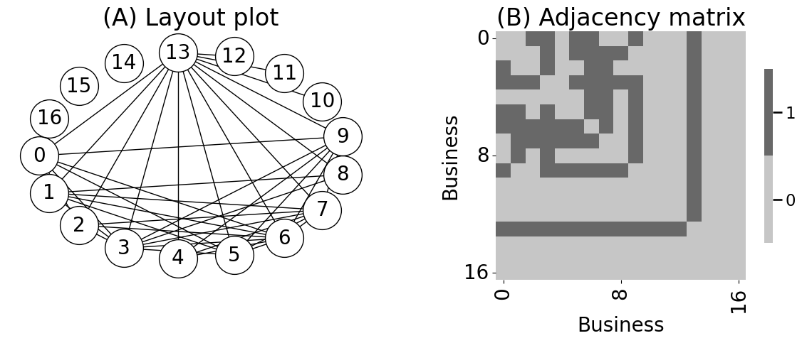

mode = "svg"
import matplotlib
font = {'family' : 'Dejavu Sans',
'weight' : 'normal',
'size' : 20}
matplotlib.rc('font', **font)
import matplotlib
from matplotlib import pyplot as plt
from graphbook_code import heatmap
from matplotlib import pyplot as plt
from graspologic.simulations import er_np
import networkx as nx
import numpy as np
n = 10
A_bus = er_np(n, 0.6)
# add pendants
n_pend = 3
A_bus = np.column_stack([np.row_stack([A_bus, np.zeros((n_pend, n))]),
np.zeros((n + n_pend, n_pend))])
n = n + n_pend
# add pizza hut node
n_pizza = 1
A_bus = np.column_stack([np.row_stack([A_bus, np.ones((n_pizza, n))]),
np.ones((n + n_pizza, n_pizza))])
n = n + n_pizza
# add isolates
n_iso = 3
A_bus = np.column_stack([np.row_stack([A_bus, np.zeros((n_iso, n))]),
np.zeros((n + n_iso, n_iso))])
A_bus = A_bus - np.diag(np.diag(A_bus))
n = n + n_iso
/opt/hostedtoolcache/Python/3.12.5/x64/lib/python3.12/site-packages/tqdm/auto.py:21: TqdmWarning: IProgress not found. Please update jupyter and ipywidgets. See https://ipywidgets.readthedocs.io/en/stable/user_install.html
from .autonotebook import tqdm as notebook_tqdm
import os
# as a heatmap
fig, axs = plt.subplots(1,2,figsize=(12,5))
heatmap(A_bus.astype(int),
xticks=[0.5,8.5,16.5], yticks=[0.5,8.5,16.5], xticklabels=[0,8,16],
yticklabels=[0,8,16], ax=axs[1], xtitle="Business", ytitle="Business")
axs[1].set_title("(B) Adjacency matrix")
# as a layout plot
G_bus = nx.from_numpy_array(A_bus)
node_pos = nx.shell_layout(G_bus)
plt.figure()
nx.draw_networkx(G_bus, with_labels=True, node_color="white", pos=node_pos,
font_size=20, node_size=1500, font_color="black", arrows=False,
width=1, edgecolors="#000000", ax=axs[0])
axs[0].set_title("(A) Layout plot")
axs[0].axis('off') # Remove the outline around the layout plot
fig.tight_layout()
os.makedirs("Figures", exist_ok=True)
fname = "businessex"
if mode != "png":
os.makedirs(f"Figures/{mode:s}", exist_ok=True)
fig.savefig(f"Figures/{mode:s}/{fname:s}.{mode:s}")
os.makedirs("Figures/png", exist_ok=True)
fig.savefig(f"Figures/png/{fname:s}.png")

<Figure size 640x480 with 0 Axes>
def compute_degrees(A):
# compute the degrees of the network A
# since A is undirected, you can just sum
# along an axis.
return A.sum(axis=1)
def prune_low_degree(A, return_inds=True, threshold=1):
# remove nodes which have a degree under a given
# threshold. For a simple network, threshold=0 removes isolates,
# and threshold=1 removes pendants
degrees = compute_degrees(A)
non_prunes = degrees > threshold
robj = A[np.where(non_prunes)[0],:][:,np.where(non_prunes)[0]]
if return_inds:
robj = (robj, np.where(non_prunes)[0])
return robj
A_bus_lowpruned, nonpruned_nodes = prune_low_degree(A_bus)
fig, axs = plt.subplots(1,2,figsize=(12,5))
# relabel the nodes from 0:10 to their original identifier names
node_names_lowpruned = {i: nodeidx for i, nodeidx in enumerate(nonpruned_nodes)}
G_bus_lowpruned = nx.from_numpy_array(A_bus_lowpruned)
G_bus_lowpruned = nx.relabel_nodes(G_bus_lowpruned, node_names_lowpruned)
nx.draw(G_bus_lowpruned, with_labels=True, node_color="white", pos=node_pos,
font_size=20, node_size=1500, font_color="black", arrows=False,
width=1, edgecolors="#000000", ax=axs[0])
axs[0].set_title("(A) Pruned degree $\leq$ 1")
fig.tight_layout()
<>:12: SyntaxWarning: invalid escape sequence '\l'
<>:12: SyntaxWarning: invalid escape sequence '\l'
/tmp/ipykernel_3595/1171188953.py:12: SyntaxWarning: invalid escape sequence '\l'
axs[0].set_title("(A) Pruned degree $\leq$ 1")
degrees_before = compute_degrees(A_bus)
degrees_after = compute_degrees(A_bus_lowpruned)
from seaborn import histplot
nfig, naxs = plt.subplots(1,2, figsize=(15, 4))
ax = histplot(degrees_before, ax=naxs[0], binwidth=1, binrange=(0, 14))
ax.set_xlabel("Node degree");
ax.set_ylabel("Number of Nodes");
ax.set_title("(A) Business network, before pruning");
ax = histplot(degrees_after, ax=naxs[1], binwidth=1, binrange=(0, 14))
ax.set_xlabel("Node degree");
ax.set_title("(B) Business network, after pruning")
Text(0.5, 1.0, '(B) Business network, after pruning')
def prune_high_degree(A, return_inds=True, threshold=0):
# remove nodes which have a degree over a given
# threshold. For a simple network, threshold=A.shape[0] - 1
# removes any pizza hut node
degrees = compute_degrees(A)
non_prunes = degrees < threshold
robj = A[np.where(non_prunes)[0],:][:,np.where(non_prunes)[0]]
if return_inds:
robj = (robj, np.where(non_prunes)[0])
return robj
# pruning nodes
A_bus_pruned, highpruned_nodes = prune_high_degree(A_bus_lowpruned, threshold=A_bus_lowpruned.shape[0] - 1)
# relabel the nodes from 0:9 to their original identifier names,
# using the previous filters from node_names_lowpruned
node_names_highpruned = {i: node_names_lowpruned[lowpruned_idx] for
i, lowpruned_idx in enumerate(highpruned_nodes)}
G_bus_pruned = nx.from_numpy_array(A_bus_pruned)
G_bus_pruned = nx.relabel_nodes(G_bus_pruned, node_names_highpruned)
nx.draw_networkx(G_bus, node_color="white", font_color="white", width=0,
ax=axs[1], pos=node_pos)
nx.draw(G_bus_pruned, with_labels=True, node_color="white", pos=node_pos,
font_size=20, node_size=1500, font_color="black", arrows=False,
width=1, edgecolors="#000000", ax=axs[1])
axs[1].set_title("(B) Pruned degree $\leq$ 1 and pizza huts")
fig.tight_layout()
fname = "nodeprune"
if mode != "png":
fig.savefig(f"Figures/{mode:s}/{fname:s}.{mode:s}")
fig.savefig(f"Figures/png/{fname:s}.png")
fig
<>:28: SyntaxWarning: invalid escape sequence '\l'
<>:28: SyntaxWarning: invalid escape sequence '\l'
/tmp/ipykernel_3595/1896666361.py:28: SyntaxWarning: invalid escape sequence '\l'
axs[1].set_title("(B) Pruned degree $\leq$ 1 and pizza huts")